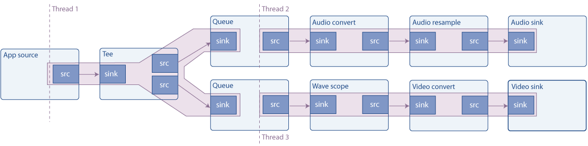

Basic tutorial 7: Multithreading and Pad Availability
Goal
GStreamer handles multithreading automatically, but, under some circumstances, you might need to decouple threads manually. This tutorial shows how to do this and, in addition, completes the exposition about Pad Availability. More precisely, this document explains:
-
How to create new threads of execution for some parts of the pipeline
-
What is the Pad Availability
-
How to replicate streams
Introduction
Multithreading
GStreamer is a multithreaded framework. This means that, internally, it creates and destroys threads as it needs them, for example, to decouple streaming from the application thread. Moreover, plugins are also free to create threads for their own processing, for example, a video decoder could create 4 threads to take full advantage of a CPU with 4 cores.
On top of this, when building the pipeline an application can specify explicitly that a branch (a part of the pipeline) runs on a different thread (for example, to have the audio and video decoders executing simultaneously).
This is accomplished using the queue element, which works as follows.
The sink pad just enqueues data and returns control. On a different
thread, data is dequeued and pushed downstream. This element is also
used for buffering, as seen later in the streaming tutorials. The size
of the queue can be controlled through properties.
The example pipeline
This example builds the following pipeline:

The source is a synthetic audio signal (a continuous tone) which is
split using a tee element (it sends through its source pads everything
it receives through its sink pad). One branch then sends the signal to
the audio card, and the other renders a video of the waveform and sends
it to the screen.
As seen in the picture, queues create a new thread, so this pipeline runs in 3 threads. Pipelines with more than one sink usually need to be multithreaded, because, to be synchronized, sinks usually block execution until all other sinks are ready, and they cannot get ready if there is only one thread, being blocked by the first sink.
Request pads
In Basic tutorial 3: Dynamic
pipelines we saw
an element (uridecodebin) which had no pads to begin with, and they
appeared as data started to flow and the element learned about the
media. These are called Sometimes Pads, and contrast with the
regular pads which are always available and are called Always Pads.
The third kind of pad is the Request Pad, which is created on
demand. The classical example is the tee element, which has one sink
pad and no initial source pads: they need to be requested and then
tee adds them. In this way, an input stream can be replicated any
number of times. The disadvantage is that linking elements with Request
Pads is not as automatic, as linking Always Pads, as the walkthrough for
this example will show.
Also, to request (or release) pads in the PLAYING or PAUSED states, you need to take additional cautions (Pad blocking) which are not described in this tutorial. It is safe to request (or release) pads in the NULL or READY states, though.
Without further delay, let's see the code.
Simple multithreaded example
Copy this code into a text file named basic-tutorial-7.c (or find it
in the SDK installation).
basic-tutorial-7.c
#include <gst/gst.h>
int main(int argc, char *argv[]) {
GstElement *pipeline, *audio_source, *tee, *audio_queue, *audio_convert, *audio_resample, *audio_sink;
GstElement *video_queue, *visual, *video_convert, *video_sink;
GstBus *bus;
GstMessage *msg;
GstPadTemplate *tee_src_pad_template;
GstPad *tee_audio_pad, *tee_video_pad;
GstPad *queue_audio_pad, *queue_video_pad;
/* Initialize GStreamer */
gst_init (&argc, &argv);
/* Create the elements */
audio_source = gst_element_factory_make ("audiotestsrc", "audio_source");
tee = gst_element_factory_make ("tee", "tee");
audio_queue = gst_element_factory_make ("queue", "audio_queue");
audio_convert = gst_element_factory_make ("audioconvert", "audio_convert");
audio_resample = gst_element_factory_make ("audioresample", "audio_resample");
audio_sink = gst_element_factory_make ("autoaudiosink", "audio_sink");
video_queue = gst_element_factory_make ("queue", "video_queue");
visual = gst_element_factory_make ("wavescope", "visual");
video_convert = gst_element_factory_make ("videoconvert", "csp");
video_sink = gst_element_factory_make ("autovideosink", "video_sink");
/* Create the empty pipeline */
pipeline = gst_pipeline_new ("test-pipeline");
if (!pipeline || !audio_source || !tee || !audio_queue || !audio_convert || !audio_resample || !audio_sink ||
!video_queue || !visual || !video_convert || !video_sink) {
g_printerr ("Not all elements could be created.\n");
return -1;
}
/* Configure elements */
g_object_set (audio_source, "freq", 215.0f, NULL);
g_object_set (visual, "shader", 0, "style", 1, NULL);
/* Link all elements that can be automatically linked because they have "Always" pads */
gst_bin_add_many (GST_BIN (pipeline), audio_source, tee, audio_queue, audio_convert, audio_resample, audio_sink,
video_queue, visual, video_convert, video_sink, NULL);
if (gst_element_link_many (audio_source, tee, NULL) != TRUE ||
gst_element_link_many (audio_queue, audio_convert, audio_resample, audio_sink, NULL) != TRUE ||
gst_element_link_many (video_queue, visual, video_convert, video_sink, NULL) != TRUE) {
g_printerr ("Elements could not be linked.\n");
gst_object_unref (pipeline);
return -1;
}
/* Manually link the Tee, which has "Request" pads */
tee_src_pad_template = gst_element_class_get_pad_template (GST_ELEMENT_GET_CLASS (tee), "src_%d");
tee_audio_pad = gst_element_request_pad (tee, tee_src_pad_template, NULL, NULL);
g_print ("Obtained request pad %s for audio branch.\n", gst_pad_get_name (tee_audio_pad));
queue_audio_pad = gst_element_get_static_pad (audio_queue, "sink");
tee_video_pad = gst_element_request_pad (tee, tee_src_pad_template, NULL, NULL);
g_print ("Obtained request pad %s for video branch.\n", gst_pad_get_name (tee_video_pad));
queue_video_pad = gst_element_get_static_pad (video_queue, "sink");
if (gst_pad_link (tee_audio_pad, queue_audio_pad) != GST_PAD_LINK_OK ||
gst_pad_link (tee_video_pad, queue_video_pad) != GST_PAD_LINK_OK) {
g_printerr ("Tee could not be linked.\n");
gst_object_unref (pipeline);
return -1;
}
gst_object_unref (queue_audio_pad);
gst_object_unref (queue_video_pad);
/* Start playing the pipeline */
gst_element_set_state (pipeline, GST_STATE_PLAYING);
/* Wait until error or EOS */
bus = gst_element_get_bus (pipeline);
msg = gst_bus_timed_pop_filtered (bus, GST_CLOCK_TIME_NONE, GST_MESSAGE_ERROR | GST_MESSAGE_EOS);
/* Release the request pads from the Tee, and unref them */
gst_element_release_request_pad (tee, tee_audio_pad);
gst_element_release_request_pad (tee, tee_video_pad);
gst_object_unref (tee_audio_pad);
gst_object_unref (tee_video_pad);
/* Free resources */
if (msg != NULL)
gst_message_unref (msg);
gst_object_unref (bus);
gst_element_set_state (pipeline, GST_STATE_NULL);
gst_object_unref (pipeline);
return 0;
}
Need help?
If you need help to compile this code, refer to the Building the tutorials section for your platform: Linux, Mac OS X or Windows, or use this specific command on Linux:
gcc basic-tutorial-7.c -o basic-tutorial-7 `pkg-config --cflags --libs gstreamer-1.0`If you need help to run this code, refer to the Running the tutorials section for your platform: Linux, Mac OS X or Windows.
This tutorial plays an audible tone through the audio card and opens a window with a waveform representation of the tone. The waveform should be a sinusoid, but due to the refreshing of the window might not appear so.
Required libraries:
gstreamer-1.0
Walkthrough
/* Create the elements */
audio_source = gst_element_factory_make ("audiotestsrc", "audio_source");
tee = gst_element_factory_make ("tee", "tee");
audio_queue = gst_element_factory_make ("queue", "audio_queue");
audio_convert = gst_element_factory_make ("audioconvert", "audio_convert");
audio_resample = gst_element_factory_make ("audioresample", "audio_resample");
audio_sink = gst_element_factory_make ("autoaudiosink", "audio_sink");
video_queue = gst_element_factory_make ("queue", "video_queue");
visual = gst_element_factory_make ("wavescope", "visual");
video_convert = gst_element_factory_make ("videoconvert", "video_convert");
video_sink = gst_element_factory_make ("autovideosink", "video_sink");
All the elements in the above picture are instantiated here:
audiotestsrc produces a synthetic tone. wavescope consumes an audio
signal and renders a waveform as if it was an (admittedly cheap)
oscilloscope. We have already worked with the autoaudiosink and
autovideosink.
The conversion elements (audioconvert, audioresample and
videoconvert) are necessary to guarantee that the pipeline can be
linked. Indeed, the Capabilities of the audio and video sinks depend on
the hardware, and you do not know at design time if they will match the
Caps produced by the audiotestsrc and wavescope. If the Caps
matched, though, these elements act in “pass-through” mode and do not
modify the signal, having negligible impact on performance.
/* Configure elements */
g_object_set (audio_source, "freq", 215.0f, NULL);
g_object_set (visual, "shader", 0, "style", 1, NULL);
Small adjustments for better demonstration: The “freq” property of
audiotestsrc controls the frequency of the wave (215Hz makes the wave
appear almost stationary in the window), and this style and shader for
wavescope make the wave continuous. Use the gst-inspect-1.0 tool
described in Basic tutorial 10: GStreamer
tools to learn all
the properties of these
elements.
/* Link all elements that can be automatically linked because they have "Always" pads */
gst_bin_add_many (GST_BIN (pipeline), audio_source, tee, audio_queue, audio_convert, audio_sink,
video_queue, visual, video_convert, video_sink, NULL);
if (gst_element_link_many (audio_source, tee, NULL) != TRUE ||
gst_element_link_many (audio_queue, audio_convert, audio_sink, NULL) != TRUE ||
gst_element_link_many (video_queue, visual, video_convert, video_sink, NULL) != TRUE) {
g_printerr ("Elements could not be linked.\n");
gst_object_unref (pipeline);
return -1;
}
This code block adds all elements to the pipeline and then links the ones that can be automatically linked (the ones with Always Pads, as the comment says).
gst_element_link_many()can actually link elements with Request Pads. It internally requests the Pads so you do not have worry about the elements being linked having Always or Request Pads. Strange as it might seem, this is actually inconvenient, because you still need to release the requested Pads afterwards, and, if the Pad was requested automatically bygst_element_link_many(), it is easy to forget. Stay out of trouble by always requesting Request Pads manually, as shown in the next code block.
/* Manually link the Tee, which has "Request" pads */
tee_src_pad_template = gst_element_class_get_pad_template (GST_ELEMENT_GET_CLASS (tee), "src_%d");
tee_audio_pad = gst_element_request_pad (tee, tee_src_pad_template, NULL, NULL);
g_print ("Obtained request pad %s for audio branch.\n", gst_pad_get_name (tee_audio_pad));
queue_audio_pad = gst_element_get_static_pad (audio_queue, "sink");
tee_video_pad = gst_element_request_pad (tee, tee_src_pad_template, NULL, NULL);
g_print ("Obtained request pad %s for video branch.\n", gst_pad_get_name (tee_video_pad));
queue_video_pad = gst_element_get_static_pad (video_queue, "sink");
if (gst_pad_link (tee_audio_pad, queue_audio_pad) != GST_PAD_LINK_OK ||
gst_pad_link (tee_video_pad, queue_video_pad) != GST_PAD_LINK_OK) {
g_printerr ("Tee could not be linked.\n");
gst_object_unref (pipeline);
return -1;
}
gst_object_unref (queue_audio_pad);
gst_object_unref (queue_video_pad);
To link Request Pads, they need to be obtained by “requesting” them to
the element. An element might be able to produce different kinds of
Request Pads, so, when requesting them, the desired Pad Template must be
provided. Pad templates are obtained with
gst_element_class_get_pad_template() and are identified by their name.
In the documentation for the tee element we see that it has two pad
templates named “sink” (for its sink Pads) and “src_%d” (for the Request
Pads).
Once we have the Pad template, we request two Pads from the tee (for the
audio and video branches) with gst_element_request_pad().
We then obtain the Pads from the downstream elements to which these
Request Pads need to be linked. These are normal Always Pads, so we
obtain them with gst_element_get_static_pad().
Finally, we link the pads with gst_pad_link(). This is the function
that gst_element_link() and gst_element_link_many() use internally.
The sink Pads we have obtained need to be released with
gst_object_unref(). The Request Pads will be released when we no
longer need them, at the end of the program.
We then set the pipeline to playing as usual, and wait until an error message or an EOS is produced. The only thing left to so is cleanup the requested Pads:
/* Release the request pads from the Tee, and unref them */
gst_element_release_request_pad (tee, tee_audio_pad);
gst_element_release_request_pad (tee, tee_video_pad);
gst_object_unref (tee_audio_pad);
gst_object_unref (tee_video_pad);
gst_element_release_request_pad() releases the pad from the tee, but
it still needs to be unreferenced (freed) with gst_object_unref().
Conclusion
This tutorial has shown:
-
How to make parts of a pipeline run on a different thread by using
queueelements. -
What is a Request Pad and how to link elements with request pads, with
gst_element_class_get_pad_template(),gst_element_request_pad(),gst_pad_link()andgst_element_release_request_pad(). -
How to have the same stream available in different branches by using
teeelements.
The next tutorial builds on top of this one to show how data can be manually injected into and extracted from a running pipeline.
It has been a pleasure having you here, and see you soon!
The results of the search are